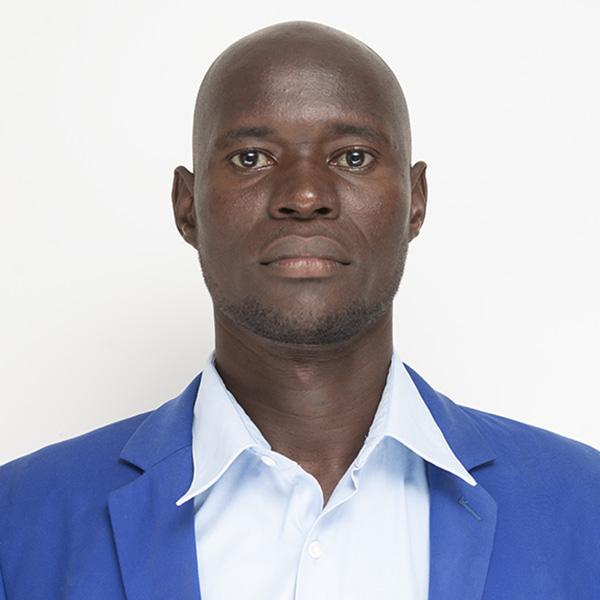

WDD 130 | William Oneka

Hwllo! My name is William Oneka, and I am from Gulu(Ancestrally from Pader District), Uganda (Currently in Tororo, Uganda). I hold a Bachelor’s degree in Information and Communication Technology from Gulu University and currently work in IT as Hardware Technician at Mukwano ICD while expanding my skills in software and web development. I am taking this class to strengthen my web development skills and gain more practical experience. I enjoy technology, problem-solving, and serving my community through church and other projects. I look forward to learning with everyone and sharing our experiences throughout the class. Greetings from Tororo, Uganda